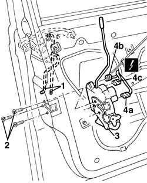

7005N20 front side door lock motor/catch assembly - rr with door panel and support frame removed
- Path
- Procedures > 70 FITTINGS > 7005 PASSENGER COMPARTMENT FRONT SIDE DOORS > 7005N front door central locking system > 7005N20 front side door lock motor/catch assembly - rr with door panel and support frame removed
- Kind
- repair procedure (removal / refitting; the operation number is the code)
- Applies to
- all engines; all production periods
- Interactive page
- https://sloeber94.github.io/elrnDB-a156/en/#/3238620
Applies to: all engines; all production periods
 Removing
Removing
 Refitting
Refitting7005A04 front side door water guard protection - r r or replace with door panel removed
7005D24 front door window rear guide - r r
1. Disconnect, from the lock side, the linkage connecting to the outer handle.
2. Undo the bolts.
3. Move the lock over slightly.
4. Disconnect the electrical connections (4a, 4b, 4c) then extract the loc,
 | Name | Connector |
|---|---|---|
4a | Front door lock gear motor left |
| Name | Connector |
|---|---|---|
4b | Front door lock gear motor left |
| Name | Connector |
|---|---|---|
4c | Front door lock gear motor left |
| Name | Connector |
|---|---|---|
4a | Right front door lock geared motor |
| Name | Connector |
|---|---|---|
4b | Right front door lock geared motor |
| Name | Connector |
|---|---|---|
4c | Right front door lock geared motor |

Applies to: all engines; all production periods
Refitting
RemovingCheck that the lock is intact and undamaged.
Connect the electrical connections.
Fit the catch.
Tighten the bolts.
Connect the connecting rods on the lock side with the outer handle.
Check that the lock works by operating the outer handle.
7005D24 front door window rear guide - r r
7005A04 front side door water guard protection - r r or replace with door panel removed
Test the operation of the lock by operating the inner handle.
Topics linked from this page (9)
- 7005A04 front side door water guard protection - r r or replace with door panel removed
- 7005C54 front side door internal opening return mechanism (with handle) - r r for repair or replace with different version
- 7005D24 front door window rear guide - r r
- N50A Front door lock gear motor left
- N50B Front door lock gear motor left
- N50C Front door lock gear motor left
- N51A Right front door lock geared motor ( FRONT PASSENGER DOOR )
- N51B Right front door lock geared motor ( FRONT PASSENGER DOOR )
- N51C Right front door lock geared motor ( FRONT PASSENGER DOOR )